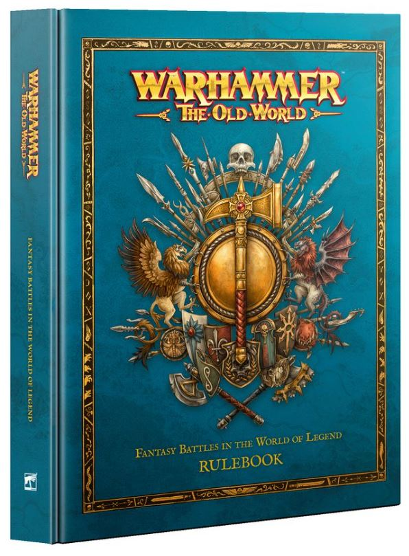

Warhammer: The Old World cumple más de dos años desde su relanzamiento en enero de 2024 y el balance es agridulce. El juego ha recuperado a la mayoría de sus veteranos de Warhammer Fantasy Battle y ha captado a una nueva generación atraída por las miniaturas y la estética rank-and-flank. El problema es que el crecimiento del juego ha superado la capacidad de Games Workshop para gestionarlo de forma centralizada, y la escena competitiva se está fragmentando.
Según un análisis publicado en Bell of Lost Souls, el núcleo del problema son las "comp rules": reglas de composición de ejército creadas por la comunidad para equilibrar el juego en torneos cuando las restricciones oficiales se perciben como insuficientes. En los últimos meses han proliferado versiones incompatibles entre sí: diferentes organizadores de torneos usan diferentes comp packages, lo que hace que una lista válida para un evento sea ilegal en otro celebrado la semana siguiente en la misma ciudad. La situación recuerda a los últimos años de Warhammer Fantasy Battle antes de que GW lo enterrase con los End Times.
GW ha respondido con FAQs y erratas periódicas, y la Matched Play Guide incluye algunas restricciones, pero para muchos jugadores no es suficiente ni lo bastante rápido. El problema específico del Old World es que las interacciones entre ejércitos son extremadamente complejas ⬠el sistema heredado de ediciones anteriores no fue diseñado pensando en torneos modernos con docenas de builds viables por facción⬠y GW no tiene el historial de soporte rápido que caracteriza a AoS o a 40K.
La ironía es que esta fragmentación convive con un momento brillante para el juego en términos de releases: en marzo llegó el set de refuerzo Defenders of the Great Bastion para Gran Cathay con 53 miniaturas, y el roadmap de 2026 apunta a más facciones nuevas. El Old World tiene el contenido. Lo que necesita ahora es estructura competitiva oficial que unifique la comunidad antes de que las grietas sean demasiado grandes para cerrarlas.